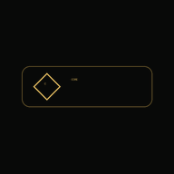

Governance Control Centre
You’re offline.
CORE’s application shell is available, but this page was not cached yet. Reconnect and open it once so it can be available offline next time.

Governance Control Centre
CORE’s application shell is available, but this page was not cached yet. Reconnect and open it once so it can be available offline next time.